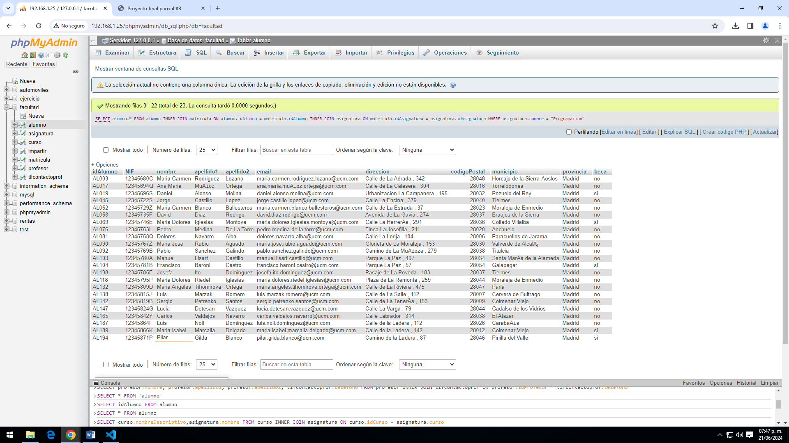

Consulta #1 - Obtener el listado de todos los alumnos
Consulta #2 - Obtener el listado de cursos y las asignaturas que tiene
Consulta #3 - OBTENER EL LISTADO (NOMBRE Y APELLIDO) DE ALUMNOS QUE TENGAN BECA
Consulta #4 - OBTENER LISTADO DE PROFESORES Y SU NUMERO DE CONTACTO
Consulta #5 - OBTENER EL LISTADO DE ALUMNOS (TODOS LOS CAMPOS) QUE ESTÉN INSCRITOS A LA ASIGNATURA DE PROGRAMACIÓN
Consulta #6 - OBTENER EL LISTADO DE PROFESORES Y ASIGNATURAS QUE IMPARTEN
Consulta #7 - MOSTRAR LA ASIGNATURA QUE TIENE MÁS ALUMNOS INSCRITOS Y SU TOTAL
Consulta #8 - OBTENER EL LISTADO DE ALUMNOS QUE LES DA CLASE EL PROFESOR CON ID PR048 (JOSÉ MANUEL), SIN IMPORTAR EN QUÉ ASIGNATURA ESTÉ INSCRITO
Consulta #9 - OBTENER EL LISTADO DE CURSOS, CON ASIGNATURA, Y EL MAESTRO QUE LAS IMPARTE
Consulta #10 - OBTENER EL LISTADO DE ALUMNOS CON ASIGNATURAS QUE